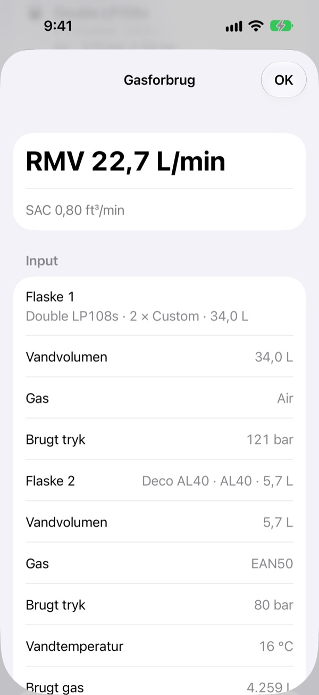

Opdater først alle enheder
Mange problemer forsvinder, når alle enheder kører det nyeste build. Åbn TestFlight på hver iPhone, iPad og Mac, du bruger, og installer eventuelle opdateringer. Et ældre build holder op med at sende ændringer, indtil det er opdateret, og viser Opdater Thermocline for at fortsætte synkroniseringen. Dine ændringer bevares og sendes efter opdateringen.
Hentning fra en dykkercomputer
Computeren bliver ikke fundet
- Væk computeren, og sæt den i dens Bluetooth-tilstand (Shearwater: Menu → Bluetooth). Den bliver der kun i cirka to minutter.
- Hold den tæt på iPhone, iPad eller Mac.
- Shearwater-computere vender tilbage til den sidste enhed, de brugte. Hvis din telefon eller en anden Mac er i nærheden, så slå Bluetooth fra på den enhed, og prøv igen.
- Tjek, at Bluetooth er slået til, og at Thermocline har tilladelse til at bruge det (iPhone: Indstillinger → Thermocline; Mac: Systemindstillinger → Anonymitet & sikkerhed → Bluetooth).
Det er en Predator eller Petrel 1, og iPhone kan ikke se den
De bruger ældre Bluetooth (Bluetooth Classic), som iPhone og iPad ikke kan bruge. Hent dem på Mac (se vejledningen), eller importér deres dyk fra Shearwater Cloud eller en UDDF-fil.
Den opretter forbindelse, men beder om en pinkode
Indtast den kode, der vises på computerens skærm. Den skal kun bruges første gang.
"Ingen nye dyk"
Kun dyk, der er nyere end din seneste hentning, hentes. Hvis du har slettet et dyk og vil have det tilbage, så slå Hent alle dyk på computeren til, og hent igen. Dyk, der allerede er i din logbog, springes over.
Hentningen stoppede halvvejs
Vælg Behold for at gemme de dyk, der kom frem, og hent derefter igen for at få resten. Hvis den bliver ved med at stoppe, så vælg Prøv igen tæt på computeren, og send hentningsloggen.
En hentning via kabel mislykkes på Mac
- Tjek, at porten passer til kablet: Listen viser, hvilken slags hver port er, og advarer, når den ikke passer til den model, du har valgt.
- Tag kablet ud, og sæt det i igen, og brug derefter opdateringsknappen til at søge efter kabler igen.
- Følg trinene under Før du starter for din model.
- Hentning via kabel er nyt. Send gerne hentningsloggen under alle omstændigheder.
Synkronisering mellem enheder
Min iPhone-app siger, at Thermocline nu er én app, eller jeg ser to Thermocline-apps
Den 18. november 2026 blev appene til iPhone, iPad, Mac og Apple Watch til én app med ét beta-link. Den iPhone-app, du havde før, hjælper dig nu kun med at flytte.
- Åbn den gamle app. Hvis den siger, at synkronisering er slået fra, så tryk på Slå »Synkroniser med iCloud« til, og lad den være åben i et minut, eller tryk på Eksportér min logbog som UDDF, og gem filen.
- Tryk på Tilmeld dig den nye beta, eller åbn beta-linket på din iPhone, og installer den nye app. Den ligger ved siden af den gamle.
- I den nye app skal du slå Profil → Synkroniser med iCloud til. Dine dyk, dykkersteder, dit udstyr og dine indstillinger kommer tilbage. Hvis du eksporterede i stedet, så brug Profil → Importér en logbogsfil.
- Du skal måske parre din dykkercomputer igen og installere Watch-appen igen fra Watch-appen på din iPhone.
- Når den nye app viser de samme dyk, så slet den gamle.
På en Mac ændres intet: Bliv ved med at opdatere Mac-appen som sædvanligt.
Dyk mangler eller er dobbelte efter en synkronisering
- Lad være med at ændre noget endnu. Tag et skærmbillede af afsnittet Synkronisering (iPhone: Profil → Synkronisering; Mac: Thermocline → Indstillinger → Synkronisering) på hver enhed, og send det.
- Tjek, at alle enheder har det nyeste build.
- Profil → Dine data → Gendannelsespunkter kan føre din logbog tilbage til før en import, en fletning eller en sletning. En gendannelse gemmer først din nuværende logbog, så den kan fortrydes.
En ændring på én enhed vises ikke på den anden
- Tjek, at Synkroniser med iCloud er slået til på begge, og at de er logget ind på den samme Apple-konto.
- Se på Venter på at sende på den enhed, hvor du lavede ændringen, og åbn appen på begge med signal. Afsnittet Synkronisering siger, når denne enhed og dine andre stemmer overens.
- Tryk på Synkroniser nu.
"Ikke logget ind på iCloud"
Log ind på iCloud i enhedens Indstillinger. Indtil da bliver din logbog sikkert på den enhed og synkroniseres, når du er logget ind.
"Din iCloud-lagerplads er fuld"
Din logbog er sikker på enheden og synkroniseres, når der er plads. Frigør noget iCloud-plads, eller slå Spar iCloud-lagerplads på dykfotos til, så fotos ikke gemmes to gange.
"En anden enhed bruger en nyere version"
Opdater Thermocline på denne enhed i TestFlight. Dine ændringer er sikre her og sendes efter opdateringen.
Import
Nogle dyk eller detaljer kom ikke med
Importrapporten viser alt under Ikke importeret og Tjek venligst med årsagen. Hver logbog skriver UDDF lidt forskelligt, så manglende værdier er normale og forbliver tomme. Hvis noget, du forventede, mangler, så send rapporten og, hvis du kan, filen.
Mit udstyr, mine fotos eller mine dyktyper fra MacDive mangler
MacDives UDDF-eksport udelader dem. Importér dens XML oven i for udstyr, tags og dyktyper, og importér på Mac MacDives mappe for fotos. Dyk, der allerede er i din logbog, tilføjes ikke to gange. Se Hvilken MacDive-fil du skal bruge.
NDL, ppO₂ eller CNS mangler på dyk fra MacDive
Dyksiden viser NDL som "—" og Deko som "Ikke registreret", eller ved ppO₂ står der "Beregnet ud fra gas og dybde". MacDives UDDF-eksport indeholder ikke computerens NDL, ppO₂ eller CNS. Dens mappe har ingen profil for dyk, som MacDive hentede på en iPhone eller iPad, fordi den gemmer dem krypteret.
Importér også MacDives XML: Den udfylder det, der mangler, uden at tilføje dyk igen. Se Hvilken MacDive-fil du skal bruge.
Mister jeg noget ved at skifte mellem filer eller apps?
- Dine oprindelige filer ændres aldrig. Gem dine MacDive-eksporter, og behold selve MacDive, indtil du har sammenlignet et par dyk.
- En ny import tilføjer, den erstatter ikke. Dyk, der allerede er i din logbog, bliver matchet og får kun det, de mangler, så du kan importere XML-filen efter UDDF-filen eller mappen efter en af dem.
- Du kan gå tilbage. Et gendannelsespunkt med navnet Før en import gemmes før enhver import af mere end ét dyk (Profil → Dine data → Gendannelsespunkter på iPhone, Indstillinger → Gendannelsespunkter på Mac). På Mac kan Fortryd import… i rapporten også rulle den tilbage.
- Hvis du forlader Thermocline: Dens UDDF-eksport er den komplette. Den indeholder computerens NDL, ppO₂ og CNS gennem hvert dyk, udstyr, tags, dyktyper og videolinks. Fotos er ikke med i nogen eksportfil.
Importerede dyk har ingen gas
Filen sagde ikke, hvilken gas der blev brugt. De dyk venter i Skal bekræftes, så du kan angive den.
Jeg importerede den forkerte fil
På Mac skal du bruge Fortryd import… i importrapporten. På begge enheder gemmes et gendannelsespunkt med navnet Før en import før enhver import af mere end ét dyk.
En Garmin-fil vil ikke importeres
- "Det er en zip-fil": Garmin Connects Eksporter original giver en .zip-fil. Pak den ud, og vælg derefter .fit-filen i den.
- "Dette er ikke en Garmin FIT-fil": Filen er ikke fra et Garmin-ur, eller kun dens navn ender på .fit. Brug filen fra urets mappe GARMIN → Activity eller Eksporter original.
- "Garmin-filer indeholder intet dyk": Løbeture, gåture, indstillinger og helbredsfiler springes over. Kun dyk kommer med.
- "Ser afkortet eller beskadiget ud": Filen stoppede halvvejs, ofte på grund af en kopiering eller hentning, der ikke blev færdig. Det, der kunne læses, vises; kopiér filen fra uret igen, og importér den igen for at få resten. Dyk, der allerede er i din logbog, springes over.
- Valg af en Garmin-fil sammen med en anden logbogsfil er ikke muligt i én omgang: Importér logbogsfilen og derefter Garmin-filerne.
Et Garmin-dyk beder mig tjekke dets flasker
Med mere end én flaskesender siger Garmins fil ikke, hvilken gas hver af dem sad på, så de blev matchet til dykkets flasker i rækkefølge. Åbn dykkets gasafsnit, og sørg for, at hvert tryk står på den rigtige flaske.
Tiden på et Garmin-dyk er en time forkert
Tiden kommer fra urets klokke. Hvis den ikke var indstillet til lokal tid, der hvor du dykkede, vises dykket med urets tid. Ret dykkets tid, eller indstil urets tidszone før næste tur.
Et driftdyk har det forkerte dykkersted
Et dyk matches til det nærmeste af stedet, hvor du gik i vandet, og stedet, hvor du kom op, hvilket på et driftdyk normalt er der, hvor du gik i vandet. Hvis det matchede det forkerte dykkersted eller intet, så vælg dykkerstedet på dykket, og tilføj andre vrag, du passerede, i noterne.
Gasforbrug og SAC
Et SAC-tal ser forkert ud
Tryk eller klik på Hvordan? ved siden af det. Det viser alle værdier: flasken og dens vandvolumen, tryk, temperatur, realgaskorrektionen, tid og dybde. Den sædvanlige synder er en forkert flaskestørrelse; ret den i Udstyr. Send et skærmbillede af skærmen Hvordan?, hvis det stadig ser forkert ud.

Der er ingen SAC, kun en besked
- Tilføj flaskestørrelsen for at se SAC: Vælg flaskens model, eller indtast dens størrelse.
- Tilføj start- og sluttryk for at se SAC: Der er ingen sender, så indtast dem på flasken.
- SAC kræver en dykprofil: Dyk, der er logget manuelt uden profil, har ingen SAC.
- Rebreatherdyk får ikke noget SAC-tal.
SAC tæller kun én flaske
På et dyk med flere gasser er det kun flasken med senderen, der har tryk. Indtast start- og sluttryk på den anden flaske, så dækker SAC al gassen.
Vejrtrækning i Oversigt siger, at intet dyk har en flaskestørrelse
Vejrtrækning beregner kun gennemsnit over dyk med en flaskestørrelse samt start- og sluttryk. Dyk fra MacDives UDDF har ingen flaskestørrelse, fordi dens størrelser ikke er vandvolumener; hvis du importerer XML-filen oven i, udfyldes de (se Hvilken MacDive-fil du skal bruge). Ellers skal du angive flasken på dine dyk (vælg dens model eller et udstyrssæt) og tilføje tryk, hvor du har dem. Under tallet viser Vejrtrækning, hvor mange dyk der ikke blev talt med.

Fotos
Et foto vises ikke på min anden enhed
Med Spar iCloud-lagerplads på dykfotos slået til beholder et foto sin kopi, indtil din anden enhed finder det i iCloud-fotos. Slå indstillingen til på begge enheder, tjek, at iCloud-fotos er slået til på begge, og giv det tid til at blive overført.
Videoer blev ikke tilføjet
Videoer fra dit bibliotek kan kun knyttes, ikke kopieres. Slå Synkronisering → Spar iCloud-lagerplads på dykfotos til, og sørg for, at videoen er i iCloud-fotos. Eller indsæt et YouTube- eller Vimeo-link under dykkets fotos.
"Thermocline kan ikke læse dine fotos"
Adgang til Fotos blev afvist, så fotos kopieres i stedet for at blive knyttet. For at knytte dem skal du tillade adgang i Indstillinger → Anonymitet & sikkerhed → Fotos → Thermocline.
Dykkersteder og Apple Watch
Det foreslåede dykkersted er forkert, eller der er intet
Vælg et andet dykkersted, søg i de indbyggede lister efter navn, eller markér eller indtast selv positionen. Indlandsstenbrud og søer mangler ofte på offentlige lister, så dine egne dykkersteder kommer først i forslagene fra da af.
Thermocline er ikke på mit Apple Watch
Watch-appen følger med iPhone-appen fra TestFlight. Åbn Watch-appen på din iPhone, find Thermocline under Tilgængelige apps, og tryk på Installer. Den kræver watchOS 11 eller nyere. Hvis du flyttede fra den gamle iPhone-app, så installer den igen: Den gamle Watch-app hører til den gamle iPhone-app.
Uret siger "Venter på et godt fix", og Markér punkt forbliver grå
Et punkt gemmes kun ud fra et fix inden for ±30 m, der er under 30 sekunder gammelt, så en forkert position når aldrig din logbog. Bliv ved overfladen med uret oven for vandet og frit udsyn til himlen, og giv det et minut. Ignorerer en gammel gemt position betyder, at det venter på en ny. GPS virker ikke under vandet: Markér punktet, før du går ned, eller når du kommer op.
"Lokalitetsadgang er slået fra for Thermocline" på uret
Åbn Indstillinger → Anonymitet & sikkerhed → Lokalitetstjenester på uret, slå Lokalitetstjenester til, og tillad Thermocline, mens appen bruges.
Et punkt markeret på uret dukkede ikke op på iPhone
Åbn Markeringer på uret. Venter på at blive sendt til iPhone betyder, at iPhone ikke har fået det endnu: Hold uret tæt på din iPhone, og åbn Thermocline på iPhone. Sendt til iPhone betyder, at det er der: Kig i Logbog → Skal bekræftes. iPhone slår punktet op, når den er online, så uden signal venter det med venter på signal for at slå op.
Uret viste ikke noget navn på et dykkersted, efter jeg markerede et punkt
Navnet kommer fra din iPhone: Når den er i nærheden, og Thermocline kan svare, viser uret det dykkersted, den ville foreslå, under punktet, dit eget eller et fra listerne over dykkersteder, med hvor langt væk det er. Når iPhone er uden for rækkevidde, navngiver uret dine egne dykkersteder ud fra den kopi, din iPhone har lagt på det, men ikke listerne over dykkersteder. Uden noget dykkersted inden for cirka 1,5 km markeres punktet uden navn. Under alle omstændigheder vælger du dykkerstedet på iPhone i Logbog → Skal bekræftes.
Det navn, jeg sagde på uret, blev ikke gemt
Navnet gemmes, når diktering eller tastatur lukkes, eller når du går tilbage. Åbn Markeringer, tryk på punktet, og tjek dets navn; tryk på Skift navnet for at prøve igen. Hvis punktet allerede var sendt, følger navnet med det til iPhone.
Registrerer uret mine dyk?
Nej. Thermoclines Watch-app markerer kun punkter ved overfladen. Dine dyk kommer fra din dykkercomputer. For Garmin Descent-ure skal du importere deres .fit-filer: se Garmin Descent i vejledningen.
Et punkt forsvandt fra uret
Det er forventet. Et punkt forsvinder fra uret, når det er bekræftet eller kasseret på iPhone. Et bekræftet punkt er et dykkersted i din logbog og synkroniseres til dine andre enheder.
Send en rapport eller en hentningslog
- Fra appen: Tag et skærmbillede, og brug derefter Del Beta-feedback i TestFlight. Den kommer frem med build og enhed vedhæftet.
- Hentningslog, iPhone: På hentningsskærmen skal du trykke på Hentningslog og derefter dele den. Den indeholder kun Bluetooth- og computermeddelelser, ingen dykdata.
- Hentningslog, Mac: I hentevinduet skal du vælge Hentningslog…, derefter Gem log… og vedhæfte filen.
- E-mail: brian@616labs.net, med din enhed, buildnummeret (vises i TestFlight), og hvad du forventede, der skulle ske.